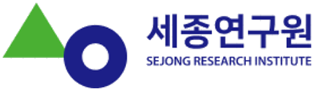

세종 읽기READING SEJONG

질문으로 시작하는 세종 읽기.
세종연구원 연구모임이 세종의 현안을 질문으로 세우고, 공공데이터와 연구 자료로 풀어 갑니다.
06 — NEXT
다음 이슈를 준비하고 있습니다
데이터로 들여다보고 싶은 세종의 현안이 있나요? 주제와 함께 쓸 만한 자료를 알려 주시면 다음 읽기를 고르는 데 반영합니다. 읽기 제작 협업 문의도 환영합니다.

세종연구원 연구모임이 세종의 현안을 질문으로 세우고, 공공데이터와 연구 자료로 풀어 갑니다.
데이터로 들여다보고 싶은 세종의 현안이 있나요? 주제와 함께 쓸 만한 자료를 알려 주시면 다음 읽기를 고르는 데 반영합니다. 읽기 제작 협업 문의도 환영합니다.